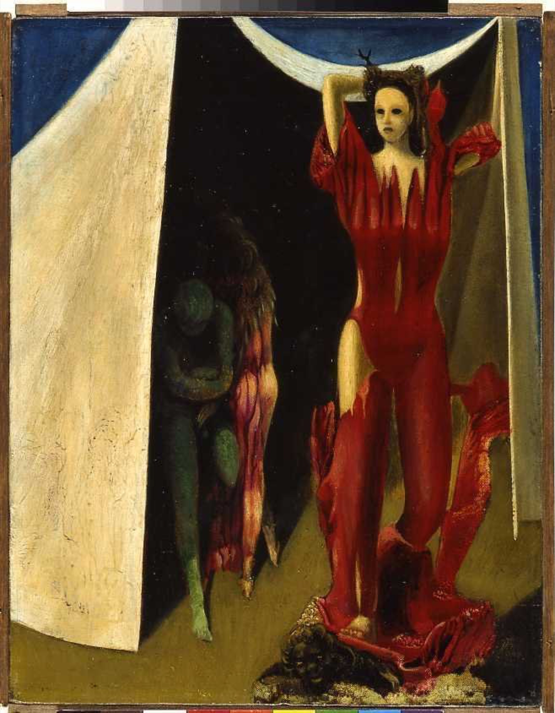
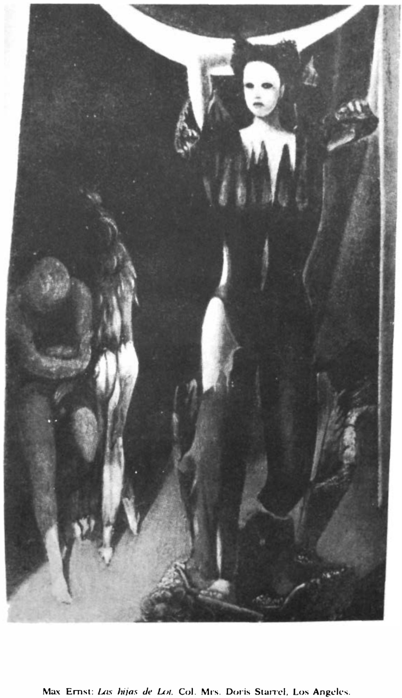

Lágrimas de Eros · Obra 90 de 124
Las hijas de Lot
Max Ernst (hacia 1941)

Las hijas de Lot, que según el Génesis se acostaron con su padre en la cueva donde se refugiaron tras la destrucción de Sodoma. Según Richard Holledge, Ernst lo pintó en 1943: una de las hijas lleva la ropa rasgada y el muslo al aire, «con el descaro de una bailarina de Las Vegas», mientras la otra se esconde con el padre en la cueva. Bataille acompaña la lámina de una nota biográfica sobre el pintor.
Lo que hace que destaque
Las hijas de Lot, que según el Génesis se acostaron con su padre en la cueva donde se refugiaron tras la destrucción de Sodoma. Según Richard Holledge, Ernst lo pintó en 1943: una de las hijas lleva la ropa rasgada y el muslo al aire, «con el descaro de una bailarina de Las Vegas», mientras la otra se esconde con el padre en la cueva. Bataille acompaña la lámina de una nota biográfica sobre el pintor.
Contexto histórico
La fecha de 1943 viene de un artículo de prensa, no de un catálogo, aunque lo que describe coincide con la lámina. Sede actual desconocida. La nota biográfica de Bataille solo da datos (nacimiento, dadá, exilio en América), así que no se cita. Localizada en la Neue Nationalgalerie de Berlín, con la colección Pietzsch, donada al Land Berlin en 2010. El museo la fecha «hacia 1941» (entre 1939 y 1943) y da como procedencia a William y Doris Copley —Doris Starrels tras volver a casarse, la «Mrs. Doris Starrel» del pie de Bataille—, después Felix Landau y, desde 1999, Pietzsch. La foto del museo es la mayor que sirve (658 × 844 px).
Autoría y procedencia
Max Ernst (1891-1976), pintor, escultor y poeta alemán nacionalizado francés, pionero del dadaísmo y figura primordial del movimiento surrealista.
En los libros
Las lágrimas de Eros, de Georges Bataille · Lámina de la p. 166
Ficha pendiente de contrastar con fuentes académicas.
Otras vistas
